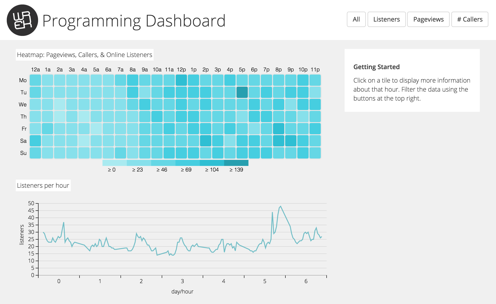
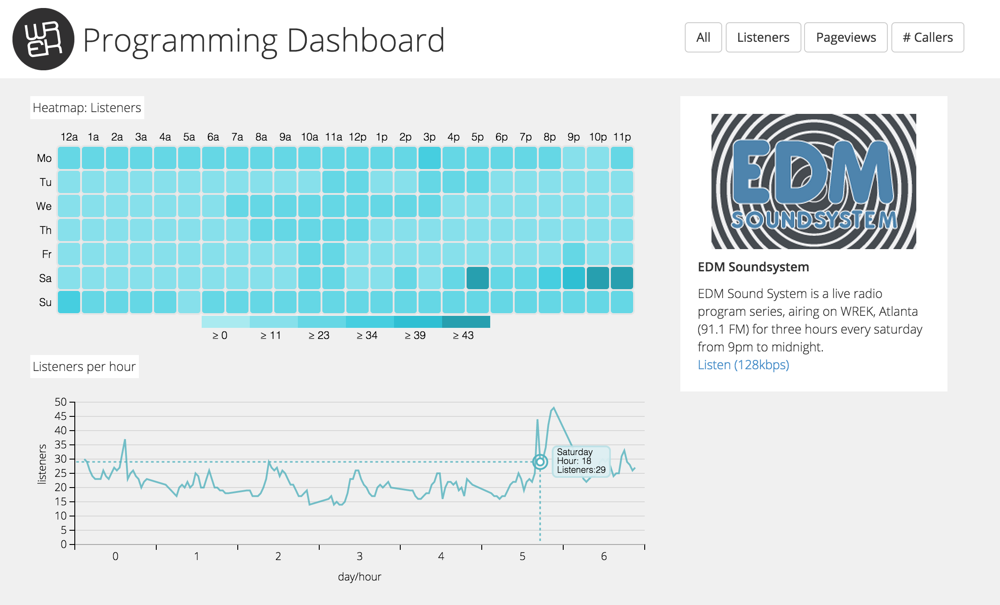

Programming Dashboard
For this project, I worked with the Webmaster of WREK Atlanta to create a dashboard for our Programming Director. Using Photoshop, Bootstrap, d3.js, and nvd3, we were able to give the Program Director more insight into when people tune in. Finding out the audience of a radio station can be quite expensive, so this was our solution. By combining data from WREK's caller logs, online listeners, and page views we were able to get a better idea of WREK's audience.
It can be viewed
here.

